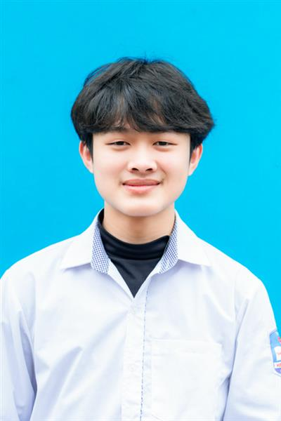

- Là một người có tính cách dễ hòa đồng, hay giao tiếp, có thế mạnh
trong làm việc nhóm, không thích nói dối.
- Thích được đi du lịch khắp nơi, luôn cố gắng trong công việc hết sức
mình để vươn lên trên người khác.
- Không có tính ích kỉ, đặc biệt thích ăn và ngủ.
- Thích truyền đạt kiến thức cho người khác
- Khối 9, 10, 11, 12 : Toán, Hóa, Vật lý
- Dạy ngôn ngữ : C++, python, HTML
- Giành Các chứng chỉ tiếng nhật N3, N2, N1
- Sáng tạo ra trang web giành riêng cho 1 kho tài liệu
- Trở thành 1 nhà develop